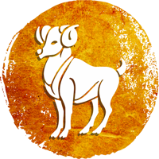

Aries Sign

HEALTH :
This year, migraine patients may face some health-related troubles. Those who consume tobacco in any form must stop using it immediately. Incorporate the regular practice of Pranayama and Yoga into your daily routine. In the month of August, conditions like brain fever may trouble you. Pay special attention to the hygiene level of your surroundings. You will have a hectic year on the professional front. Stay away from getting into controversies while visiting crowded places. Have fruit juice regularly. Due to excess heat in the body, women natives may suffer from heavy bleeding. The lunar eclipse in November, which will occur in your Rashi, will not be favourable from the health’s perspective.
FINANCIAL CONDITION:
This year your financial condition will remain strong. On April 12, Rahu will transit in your Rashi and this transit will increase your savings. You will judiciously invest your earnings. Business activities will remain favourable. Your expenses will also reduce. Jupiter’s fifth aspect will fall on your fourth house, and this will result in huge financial gains through property deals. The year is favourable if you are planning to purchase a new vehicle. At the end of the year, you will have adequate monetary gains.
FAMILY AND SOCIAL LIFE:
You will spend lavishly on your family. The first few months will be troublesome for your near and dear ones. Your habit of imposing your thoughts on others might cause disputes. Your children will obey you. Control the fickleness of young kids. The health of your parents will remain good. The advice of your family members will hugely benefit you. In May, you might face troubles from your in-laws’ side. Don’t disregard your elderly family members. Regularly conduct religious ceremonies in your home. Your social reputation will increase.
LOVE LIFE:
You will spend lavishly on your family. The first few months will be troublesome for your near and dear ones. Your habit of imposing your thoughts on others might cause disputes. Your children will obey you. Control the fickleness of young kids. The health of your parents will remain good. The advice of your family members will hugely benefit you. In May, you might face troubles from your in-laws’ side. Don’t disregard your elderly family members. Regularly conduct religious ceremonies in your home. Your social reputation will increase.
EDUCATION AND CARRER :
The year is highly favourable for the students who are pursuing technical education. The direct aspect of your eleventh house Jupiter will fall on your fifth house till April. Due to this, there are strong chances of success in academics and competitive exams. The year is favourable for people associated with arts, fashion and manufacturing related activities. This year, the lord of your Karmasthana, Saturn, will continue to travel in your tenth and eleventh houses, thus motivating you to persistently work hard. And you will also reap the rewards of your hard work. You may be given some special rights this year, but make sure not to abuse your powers; otherwise, your respect and reputation may decrease. You may need to travel abroad for business-related work. There are chances of a transfer to your desired location. After October, you might be promoted to a higher position at the workplace. You may expand your business.